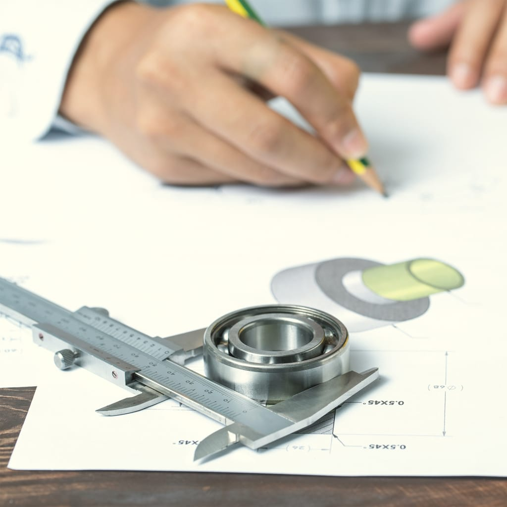
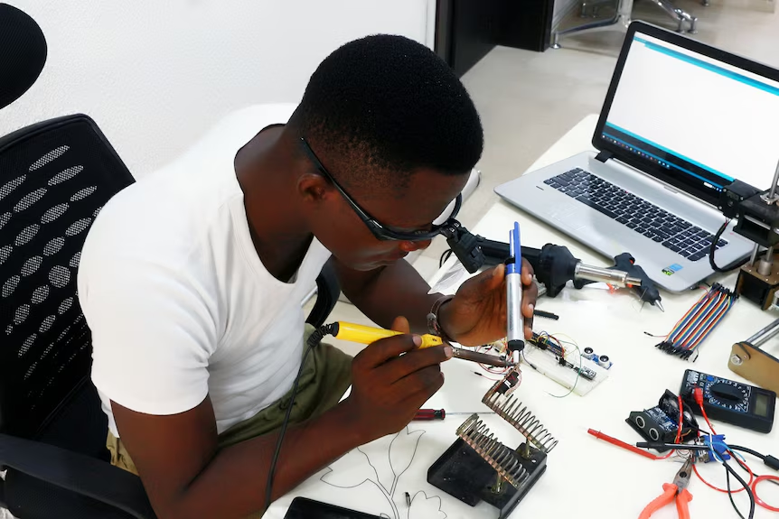
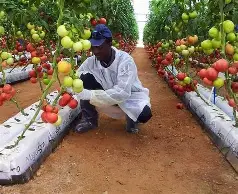

(Sciences et techniques). La série S3 se concentre sur le domaine scientifique et technique, spécialement orienté vers la mécanique et les systèmes industriels...
Série S3 – Enseignement Technique La série S3 se concentre sur le domaine scientifique et technique, spécialement orienté vers la mécanique et les systèmes industriels. Elle prépare les élèves à comprendre, analyser et concevoir des systèmes techniques tout en développant des compétences pratiques et scientifiques. Matières principales et rôle : Construction mécanique : Étude des pièces, mécanismes et assemblages ; permet de comprendre le fonctionnement des machines et réaliser des projets techniques. Mathématiques : Base pour le raisonnement logique, les calculs de forces, vitesses et dimensions dans les systèmes techniques. Physique-Chimie (PC) : Compréhension des phénomènes liés à l’énergie, aux matériaux et aux forces ; indispensable pour analyser et optimiser les systèmes mécaniques. Technologie générale : Donne une vision globale des systèmes industriels et de leur fonctionnement. Matières de formation générale : Français : Développe la capacité à communiquer clairement, rédiger des rapports techniques et comprendre des consignes. Anglais : Permet de lire des manuels techniques et documents scientifiques internationaux. EPS : Contribue à la santé et à la discipline physique. Objectif de la série S3 : Former des élèves capables de réaliser des projets techniques, de résoudre des problèmes concrets en mécanique et de se préparer à des études supérieures ou à une insertion professionnelle rapide dans le domaine technique et industriel.

(Sciences et technologiques de l'industrie pour le développement durable). La série STIDD est orientée vers les industries modernes et durables...
Série STIDD – Sciences et Technologie de l'Industrie pour le Développement Durable La série STIDD est orientée vers les industries modernes et durables. Elle prépare les élèves à comprendre l'impact environnemental des activités industrielles et à développer des solutions technologiques respectueuses de l'environnement. Matières principales et rôle : Technologie Industrielle : Étude des systèmes de production durables, des énergies renouvelables et des technologies vertes. Physique-Chimie : Compréhension des processus chimiques et physiques liés au développement durable. Economie Générale : Analyse des enjeux économiques du développement durable et des opportunités commerciales. Gestion de Projet : Initiation à la gestion de projets durables et innovants. Matières de formation générale : Français : Communication technique et rédaction de rapports d'impact environnemental. Anglais : Accès aux ressources internationales sur la durabilité. Mathématiques : Calculs et analyses quantitatives pour les projets durables. Objectif de la série STIDD : Former des techniciens capables de concevoir et mettre en œuvre des solutions industrielles durables, de contribuer à la protection de l'environnement et de participer à la transition écologique dans le secteur industriel.
(Sciences et Technologies de l'Économie et de la Gestion). La série STEG prépare les élèves aux métiers de la gestion, du commerce et de l'administration...
Série STEG – Sciences et Technologies de l'Économie et de la Gestion La série STEG prépare les élèves aux métiers de la gestion, du commerce et de l'administration. Elle offre une formation complète en économie, gestion financière et technologies de gestion. Matières principales et rôle : Économie Générale : Principes fondamentaux de l'économie, marchés, concurrence et macroéconomie. Gestion des Entreprises : Fonctionnement interne, structures organisationnelles et stratégies commerciales. Comptabilité : Tenue des comptes, analyse financière et gestion budgétaire. Droit de l'Entreprise : Cadre juridique des activités commerciales et obligations légales. Matières de formation générale : Français : Rédaction commerciale, communication en entreprise et rapports professionnels. Anglais : Vocabulaire commercial et négociation internationale. Mathématiques Financières : Calculs de rentabilité, amortissements et analyses financières. Objectif de la série STEG : Former des gestionnaires et administrateurs capables de gérer les ressources humaines et financières, de conduire des stratégies commerciales et de contribuer efficacement au fonctionnement et à la croissance des organisations.
(Sciences et technologies de l'agriculture et de l'environnement). La série S4 prépare les élèves à travailler dans les secteurs agricoles et environnementaux ...
Série S4 – Sciences et Technologies de l'Agriculture et de l'Environnement La série S4 prépare les élèves à travailler dans les secteurs agricoles et environnementaux en mettant l'accent sur la durabilité et la gestion des ressources naturelles. Matières principales et rôle : Agriculture et Élevage : Techniques modernes de production agricole, sélection variétale et gestion du bétail. Écologie et Environnement : Protection des écosystèmes, gestion des ressources naturelles et biodiversité. Chimie Agricole : Étude des sols, engrais et produits phytosanitaires. Technologies Agricoles : Équipements modernes et systèmes d'irrigation durables. Matières de formation générale : Français : Communication technique et rédaction de rapports agricoles. Anglais : Accès aux ressources scientifiques internationales. Mathématiques : Calculs pour les rendements, analyses statistiques agricoles. Objectif de la série S4 : Former des techniciens agricoles et environnementaux capables de mettre en œuvre des pratiques durables, de gérer les ressources naturelles responsablement et de adapter l'agriculture aux défis climatiques et écologiques.

(Sciences et technologies du produit agroalimentaire). La série S5 prépare les élèves aux carrières dans l'industrie agroalimentaire, couvrant tous les aspects...
Série S5 – Sciences et Technologies du Produit Agroalimentaire La série S5 prépare les élèves aux carrières dans l'industrie agroalimentaire, couvrant tous les aspects de la transformation des produits agricoles en aliments consommables. Matières principales et rôle : Technologie Agroalimentaire : Processus de transformation, techniques de conservation et conditionnement des aliments. Biochimie Alimentaire : Étude des composants alimentaires, réactions chimiques et fermentation. Hygiène et Sécurité Alimentaire : Normes sanitaires, HACCP et contrôle qualité. Gestion Qualité : Assurance qualité, traçabilité et législation alimentaire. Matières de formation générale : Français : Documentation technique, rédaction de fiches de produits et communication. Anglais : Normes internationales de sécurité alimentaire. Mathématiques : Dosage, calculs de rendement et analyses statistiques de qualité. Objectif de la série S5 : Former des techniciens agroalimentaires compétents capable de gérer la production et la transformation de produits alimentaires de qualité, d'assurer la conformité aux normes sanitaires et de contribuer à l'innovation dans l'industrie alimentaire.